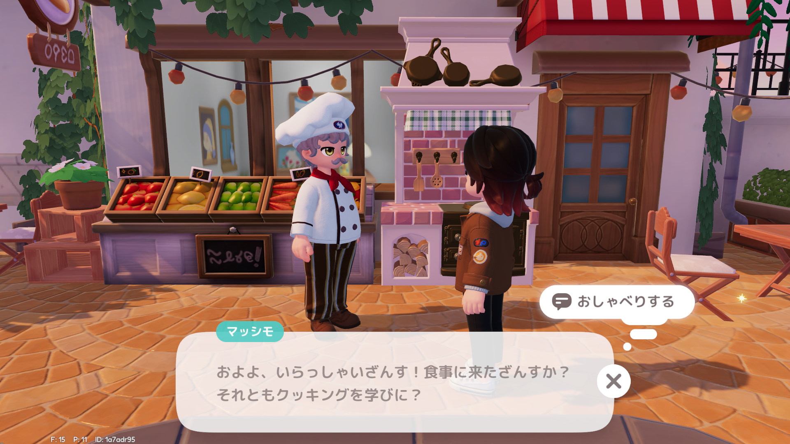
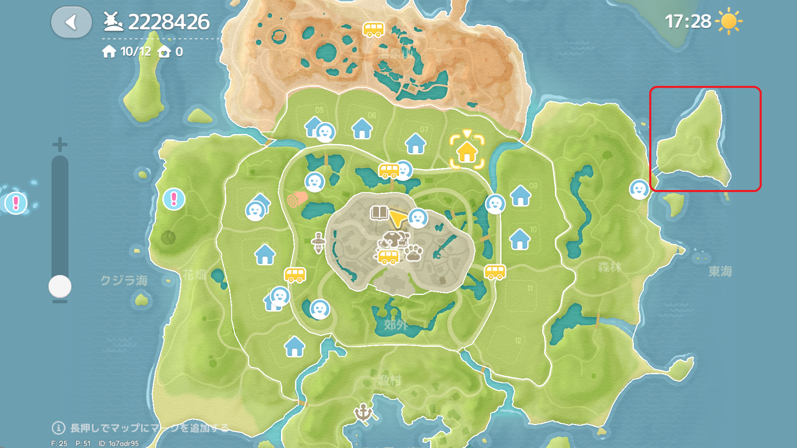
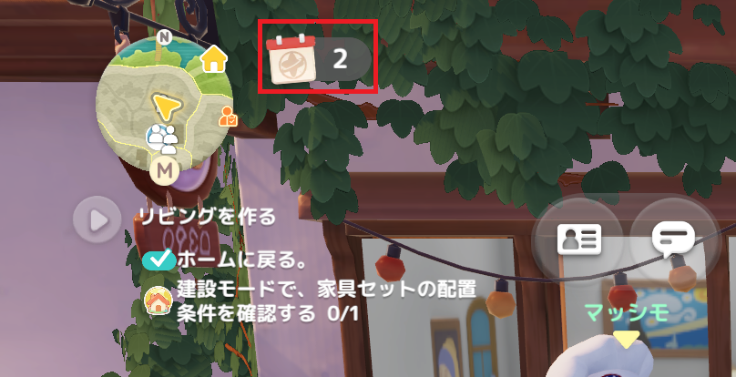

初心者が最初にやるべきことまとめ

しばらく続けていくと、趣味が出ます。この人に話しかけて料理を選んでください。 ハートピアはとにかくお金が必要になるので料理で作ったのを売りましょう。 ブルーベリーとトマトが作物の経験値も稼げてお得です。
序盤はトマトが効率高く、経験値も早く上がります。 水やりをしてもらうと星の周りに、点が付いて作物のが☆上がる確率アップします、雑草も同じく。 周りの人にやってあげて水やりしてもらいましょう。
趣味をしていき経験値が貯まると、趣味育成券でレベルが上がります。 均一に上げてしまうと趣味育成券がなくなってしまうので、1か2つに絞りましょう。 おすすめは料理と農芸。

金策するなら、トリュフを使った料理がコストも低く儲かります。 地図の右上ここに4箇所トリュフがあり、大体15分で復活します。

ハートピアは開拓者レベルが大事！ 左上を押して、デイリー依頼をやりましょう。 ここで開拓者レベルが上がります。